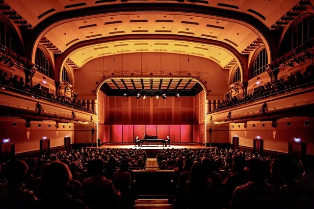

Nieuws ·
Concertgebouw De Vereeniging presenteert programma klassieke muziek 2024-2025

Publiekslievelingen Lucas en Arthur Jussen keren terug naar Concertgebouw De Vereeniging, na hun uitverkochte concert afgelopen seizoen. Lorenzo Viotti, een andere publieksfavoriet, komt voor het eerst (en meteen voorlopig voor het laatst) naar Nijmegen: dit jaar neemt hij afscheid als chef-dirigent van het Nederlands Philharmonisch Orkest. Andere highlights zijn het ontroerende Stabat Mater van Pergolesi, het immer populaire Requiem van Mozart, en de Vespers van Rachmaninov in een theatrale uitvoering door het Franse gezelschap La Tempête. Programmeur Kenne Peters stelde een gevarieerd programma samen, in samenwerking met Phion en de Nijmeegse Stichting voor Kamermuziek. Op 29 maart start de kaartverkoop voor de Vrienden van Stadsschouwburg en De Vereeniging en vanaf woensdag 3 april (11.00 uur) kan iedereen tickets bestellen, online en via de kassa.
(keuze)series en cursus muziekkijker
Onze programmeur Kenne Peters, Phion en de Nijmeegse Stichting voor Kamermuziek hebben prachtige series samengesteld. Bestel je een serie, dan ben je verzekerd van de mooiste muziek en geniet je van een aantrekkelijke korting. Met de keuzeserie is het mogelijk om je eigen programma samen te stellen. Bij aankoop van vier of meer concerten ontvang je 15% korting.
Voor wie benieuwd is naar de wereld van klassieke muziek, maar niet weet waar te beginnen met luisteren is er de cursus muziekkijker. Van groot orkest tot solo piano, in deze cursus nemen we je mee op reis langs verschillende subgenres, instrumenten en stijlperiodes in de geschiedenis van de klassieke muziek.
Tips van programmeur Kenne Peters
Enkele tips van programmeur Kenne Peters: “Het Stabat Mater van Pergolesi is een favoriet muziekstuk van heel veel mensen. Ik ben een van hen. Prachtige muziek die altijd ontroert, al helemaal als de fantastische Carolyn Sampson de sopraanpartij zingt. Kerst is voor mij niet compleet zonder een bezoek aan een mooi concert, het liefst door een steengoed koor met een feestelijk programma. Het Engelse koor The Sixteen voldoet wat dat betreft aan alle eisen. De Amerikaanse pianist Emanuel Ax behoort tot de absolute wereldtop en is niet vaak in Nederland te horen. Met zijn fluwelen toon en sensitieve spel weet hij al meer dan vijftig jaar zijn publiek te betoveren. Ons huisorkest Phion heeft een aantal grootse symfonieën op het programma staan: Bruckners indrukwekkende Zevende, de prachtige Vierde van Mahler en de meesleepende Tweede van Sibelius mag je niet missen.”
kaartverkoop bij Concertgebouw De Vereeniging
De kaartverkoop start op woensdag 3 april om 11.00 uur via sedv.nl/klassiekemuziek
De dagkassa in De Vereeniging is geopend en telefonisch bereikbaar woensdag t/m zaterdag van 11.00 – 15.00 uur, tel. nr. 024 3 22 11 00.